Probably Stolen · bản 1.0
9 nghề khởi đầu
Mỗi nghề: được cho gì, kiếm tiền thế nào từng bước, con số quan trọng, cái gì làm bạn sạt nghiệp và perk nên chọn. Viết cho người mới chơi đọc cũng hiểu.
Số liệu chính lấy từ probablystolen.gamertw.com (đọc từ file game bản 1.0.0.12, độ khó Mark Up / Normal), đối chiếu probablystolenwiki.com, QuestDuo, Probably Stolen DB, Probably Stolen Codex, Whisper of the House, Destructoid và guide Steam. Nguồn ở cuối trang. Bản vá sau có thể đổi số.
Nghề là gì? Đọc cái này trước
Nghề không khoá bạn lại. Khoảng ngày 7, ông Joe Wild đưa danh thiếp. Từ đó bạn mua thêm được bất kỳ nghề nào khác bằng tiền. Ai cũng có cùng mục tiêu cuối: mua đứt cửa tiệm (12.000 cr ở độ khó Normal).
So sánh 9 nghề
Tiền khởi đầu và tiền nhà đầu tiên giống nhau ở mọi độ khó (theo file game). Lời mỗi đêm tính ở giá gốc, độ khó Normal.
| Nghề | Tiền đầu | Nhà tuần 1 | Có dạy chơi | Độ khó | Kiếm tiền bằng | Cái làm bạn sạt nghiệp |
|---|---|---|---|---|---|---|
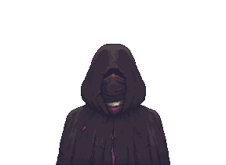 Apprentice | 550 | 200 | Có | ★☆☆☆☆ | Mua rẻ bán đắt, thẩm định đồ | Không có rủi ro riêng |
 Water Merchant Water Merchant | 400 | 200 | Có | ★★☆☆☆ | Lọc nước bẩn thành nước sạch | Dán nhãn sai bị bắt, mất danh tiếng |
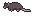 Rat Wrangler | 600 | 200 | Có | ★★☆☆☆ | Nuôi chuột bán thịt | Dịch bệnh trong lồng |
| Hydroponic Farmer | 450 | 240 | Có | ★★☆☆☆ | Trồng cây trong máy | Nước bẩn, khoáng sai thì cây còi |
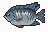 Aquafarmer | 150 | 240 | Có | ★★★☆☆ | Nuôi cá, lấy trứng cá muối | Tuần đầu cạn tiền, cá chậm lớn |
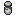 Chemist | 300 | 200 | Không | ★★★☆☆ | Pha chế Dream Dust, thuốc | Hàng cấm: điều tra, phạt |
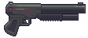 Gunsmith | 150 | 250 | Không | ★★★★☆ | Bán và độ súng theo đơn | Ít tiền, mất giấy phép khi danh tiếng tụt |
 Fence Fence | 450 | 250 | Không | ★★★★☆ | Buôn đồ ăn cắp, hàng cấm | Bị khám, tịch thu, bắt giam |
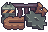 Rock Bottom | 0 | 200 | Không | ★★★★★ | Nhặt rác ban đêm bán lại | Không có gì cả, 1 tuần là phải trả nhà |
Chọn nghề nào?
Thứ tự chơi gợi ý (theo gamertw)
- Apprentice, Mark Up: học tiền nhà, mặc cả, Heat, mua tiệm.
- Water Merchant hoặc Hydroponic, Mark Up: học một dây chuyền sản xuất. Từ lần chơi thứ 2 mới mở perk.
- Chemist hoặc Fence: học hệ thống điều tra của Security.
- Rock Bottom, Thin Margins: thành tựu khó nhất.
Apprentice · Học việc
Một ngày làm việc
Lịch 2 tuần đầu
| Ngày | Chuyện gì xảy ra | Bạn làm gì |
|---|---|---|
| 1 | Mở tiệm | Bán cuộn giấy vệ sinh, kem đánh răng có sẵn với giá vừa phải. |
| 4 | Bảo hiểm xuất hiện | Mua ngay. Đêm đầu không bảo hiểm có 38% bị trộm, mỗi đêm bỏ qua +5%. Phí = tổng giá hàng ÷ 400 + 3 (2.000 cr hàng ≈ 8 cr/đêm). |
| 5 | Mentor cho 2 bảng neon (Đồ ăn, Đồ gia dụng) | Để cả hai trong Display Case để người bán tự mang hàng tới. |
| 6 | Dr. Jackson ghé | Mua Furnace 50 cr (rẻ hơn 75%, sau này 200–230). 2 Metal Ore → 1 thỏi kim loại 50–75 cr. |
| 7 | Trả nhà 200 | Có 1 lần được khất (Landlord grace) ở Normal, đừng trông vào nó. |
| ~7 | Joe Wild đưa danh thiếp | Xem thử, trả nhà xong mới mua nghề mới. |
| 8 | Hội đồng thẩm định mời vào (85 cr). Mentor dạy mặc cả | Tham gia. Treo giấy chứng nhận trong Display Case. Đừng bấm “Don’t join”, nó không bao giờ quay lại. |
| 10 | Dịch vụ dọn rác (Sawyer) | Bật lên. Rác làm tiệm xấu đi, mất khách. Đừng bắn Sawyer. |
| 12–13 | Mentor đưa shotgun. Aug đầu tiên tới ngày 13 | Chỉ bắn khi chắc chắn là Aug (mua Aug Scanner của Dr. Jackson). Bắn nhầm người = tội ngộ sát, mất danh tiếng 4 phe. |
| 14 | Trả nhà 210 | Từ đây mỗi lần +5%. Ngày 49 là 266. |
Kiếm tiền khi không có nghề riêng
| Cách | Lời khoảng | Ghi chú |
|---|---|---|
| Thẩm định đồ | 73 cr/ngày (Junior) → 130 → 190 → 300 (Master) | Không cần vốn. Đoán giá trong ±5% giá thật là “Perfect”, ăn nhiều nhất. |
| Mua sỉ (Accept Wholesale) | +35% đến +72% | Thợ mỏ, người nhặt rác giảm 15–25%, người bán nước 15–40%. Phải có đủ tiền mua cả lô. |
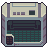 Furnace | ~32 cr/đêm | Nâng cấp module Blast + Flux: ~80/đêm. |
| Sự kiện chợ | Tuỳ sự kiện | Đọc báo mỗi sáng. Bạo loạn: súng +50%, đồ ăn +30%. Đình công: nước, đồ ăn +40%. Mất điện: pin +66%. |
Perk nên chọn (từ lần chơi 2): Vigilant (không bao giờ bị trộm, khỏi trả bảo hiểm) + Savings (+150 cr trước kỳ nhà đầu).
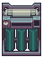
Water Merchant · Buôn nước
Các loại nước (giá tham khảo theo QuestDuo)
| Loại | Độ sạch | Giá | Ai mua |
|---|---|---|---|
| Pure Water | > 99,9% | 200 | Người giàu. Pha thêm vào nước kém để nâng độ sạch. |
| High-Quality | 99–99,9% | 100 | Người giàu, Spacer |
| Basewater | 98–99% | 40 | Dân nghèo |
| Ghostwater | 96–98% | 27 | Đừng bán, lọc tiếp |
| Rustwater | 90–96% | 20 | Nguyên liệu rẻ để lọc |
| Gutterflow | < 90% | 10 | Chỉ dùng công nghiệp |
Lọc nước từng bước
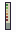
Nhúng que thử, xem nước sạch bao nhiêu %. Đổ qua bình có Water Filter, rót ra chai sạch.
Đổ qua bình có Water Filter, rót ra chai sạch.| Công thức cho 1 can 6 L (chưa có máy Purifier) | Ra |
|---|---|
| Rustwater + đèn UV + Water Filter + 2 viên lọc (từng viên) | ~5,6 L Basewater · rẻ nhất |
| Rustwater + Water Filter + 3 viên lọc | ~5,5 L Basewater (ngày nước bẩn có thể không đạt) |
| Rustwater hoặc Gutterflow + máy HydraTech (60 độ bền) + 1 viên | ~5,9 L Basewater · sạch nhất, tốn độ bền máy |
Perk nên chọn: Working Pipes (Rustwater vô hạn cho máy lọc có sẵn) + Savings.
Fence · Buôn đồ ăn cắp
Hiểu “Heat” (độ nóng) bằng hình
| Giá gốc món đồ | Heat lúc mua | Số đêm để nguội | Giảm giá khi mua |
|---|---|---|---|
| ≤ 17 | Không tính là đồ ăn cắp | — | — |
| 18–49 | 25 | 2 | −10% |
| 50–84 | 50 | 3 | −15% |
| 85–139 | 75 | 5 | −20% |
| ≥ 140 | 100 | 6 | −25% |
Hàng cấm (contraband): 4 cấp
| Cấp | Bán được thêm | Bị khám ra thì | Ví dụ |
|---|---|---|---|
| Low | +35% | Cảnh cáo | Đạn 10mm |
| Mid | +70% | Tịch thu | Dream Dust, súng Ironcraft 10, thẻ Security |
| High | +100% | Tịch thu + phạt bằng giá trị, không trả được thì bị bắt | Shotgun Rampart, thẻ Command |
| Critical | +150% | Bị bắt, đóng tiệm vĩnh viễn | Neural Core Module |
Quy trình an toàn mỗi ngày
- Lúc mua: xem tooltip. Hàng cấm ghi cấp, đồ ăn cắp ghi “Stolen (X% Heat)”. Tính số đêm phải chờ (bảng trên hoặc máy tính cuối trang).
- Trước khi ngủ: mọi hàng cấm và đồ còn Heat trên ~25 cho vào Smuggler’s Bay hoặc tủ khoá. Không để gì nóng trên quầy hay trong Display Case qua đêm.
- Hàng cấm để trong Display Case = khách đầu tiên ngày hôm đó là thanh tra. Đừng bao giờ bày.
- Chọn người mua: bán cho Cartel (không tính tội), Revolution (tính 1/3), Black Market (1/2). Bán cho người giàu thì tính đủ 100%.
- Giữ “Investigation Progress” dưới 80: khi đó mỗi đêm mỗi tội trên hồ sơ giảm 20. Vượt 80 thì không tự giảm nữa, phải thuê Fixer của Joe Wild hoặc xoá bằng chứng trước khi tới 100.
| Tổng tội buôn bán + giữ đồ ăn cắp | Bao lâu bị khám 1 lần |
|---|---|
| dưới 50 | Chưa bị khám định kỳ |
| 50–149 | 3–5 ngày |
| 150–299 | 3–4 ngày |
| 300–449 | 3 ngày |
| 450–749 | 2–3 ngày |
| 750+ | 1–2 ngày |
Perk nên chọn: Intimidating (mọi tội giảm 1/3) + Model Citizen (+30 Security, hối lộ rẻ hơn 60). Build đầy đủ: Intimidating + Model Citizen + Wild’s Favorite + Bad Lease.
Rock Bottom · Trắng tay
Lộ trình của người thắng ngày 112 (TowerNumberNine, Thin Margins)
| Giai đoạn | Làm gì |
|---|---|
| Tuần 1 | Đêm nào cũng đi nhặt rác (~44 cr hàng/đêm, 5 lần lục mỗi chuyến). Mang 1–2 băng gạc phòng bị thương. Chưa trả tiền điện, chưa có máy thì chưa cần. |
| Ngày 5 | Hội đồng thẩm định tới sớm (vì bỏ qua tutorial). Tham gia: thu nhập không cần vốn. |
| Giữa game | Mua sỉ, canh sự kiện (mua lúc thừa, bán lúc thiếu), nhà cung cấp của Joe Wild, máy chế biến: tủ lạnh, Furnace, máy sạc pin (mua pin yếu rẻ, sạc đầy bán lại). |
| Thu thêm | Bắn Aug lấy thưởng, báo cảnh sát tội phạm truy nã (Model Citizen +50% tiền thưởng). |
| Kết quả | Thắng ngày 112 mà không đụng đồ ăn cắp hay hàng cấm. |
Perk nên chọn (build “Scavenger”): Proficient Scavenger + Careful Scavenger (5 lần lục, không bị thương) + Short Sleeper (đi đêm không mất khách) + Handy (có dụng cụ từ ngày 1). Người thắng ngày 112 dùng: Aug Menace + Model Citizen + Short Sleeper.
Hydroponic Farmer · Trồng cây thủy canh
Trồng từng bước
Cho 1 chai nước Pure hoặc High-Quality vào máy. Đi ngủ. Chín thì máy tự hái ra khay.
Đi ngủ. Chín thì máy tự hái ra khay.| Hạt | Số đêm | Thu | Nước/đêm | Khoáng đúng | Viên cho chai 2 L | Dùng để |
|---|---|---|---|---|---|---|
| Nutrifruit | 2 | 7 quả | 100 mL | 0,5–2,5% | 2 | Đồ ăn, thức ăn chuột. Loại duy nhất to được “Huge” |
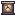 Kotton | 6 | 13 sợi | 250 mL | 2–5% | 4,67 | Đắt nhất, cần Pure Water |
| Dream Cap | 4 | 8 nấm | 100 mL | 1,75–3,25% | 3,33 | Dream Dust (hàng cấm Low) |
| Coffee | 3 | 8 hạt | 100 mL | 1,75–3,25% | 3,33 | Viên Caffeine, hạt tự làm giống |
| Fillerweed | 1 | 5 | 451 mL | 0–2% | 0 | Đồ ăn rẻ, chịu nước bẩn |
| Hydroreed | 3 | — | 20 mL | 0–2% | 0 | Không ra gì, mà lọc nước (mỗi đêm diệt ~28% tạp chất) |
| BloomBerry | 3 → 2 | 6 | 100 mL | 1,25–2,75% | 2,67 | Làm rượu. Hái xong mọc lại |
Nước bẩn làm cây còi thế nào (Growth Score lúc hái, tối đa 100)
| Hạt | Pure 99,9% | 99,5% | 99% | Basewater 98% | Ghostwater 96% |
|---|---|---|---|---|---|
| Nutrifruit | 100 | 100 | 92 | 73 | 42 |
| Kotton | 100 | 68 | 11 | 0 | 0 |
| Dream Cap | 100 | 95 | 79 | 21 | 0 |
| Coffee | 100 | 96 | 84 | 40 | 0 |
| BloomBerry | 100 | 97 | 88 | 58 | 0 |
Perk nên chọn: Tinkerer + Savings (nâng cấp máy là khoản chi lớn nhất).
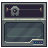
Gunsmith · Thợ súng
Giấy phép súng
| Giấy phép | Giá | Cần Security | Bị thu khi dưới | Khách tới | Khả năng khách tới mỗi ngày |
|---|---|---|---|---|---|
| Class I | 300 | +20 | 0 | Dân Lower Levels | 50% → 75% → 100% |
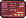 Class II | 600 | +50 | +30 | Lính đánh thuê | 40% → 60% → 80% → 100% |
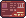 Class III | 900 | +80 | +60 | Người giàu | 35% → … → 100% |
Phải mua theo thứ tự I → II → III. Mua xong còn phải đạt đủ Security thì sáng hôm sau mới nhận. Treo giấy phép trong Display Case thì khách loại đó mới tới. Ngày nào không có khách thì hôm sau khả năng tăng.
Làm đơn súng: 3 luật dễ sai
Máy in 3D
- Cắm chip đúng món cần in (chip dùng lại được).
- Món kim loại cần Metal Printer Module; khung súng và Gun Parts cần thêm CNC Module. Từ bản 1.0.0.12, module phải nằm trong ô module, để ở ô nguyên liệu là máy không chạy.
- Cho nguyên liệu (nhựa in, sắt vụn, thỏi kim loại), lắp pin đầy, dọn trống khay ra.
- Đi ngủ. Nhiều món in mất vài đêm, giữ pin đủ.
| Nên in trước (không cần module) | Nguyên liệu | Ra | Giá mỗi cái |
|---|---|---|---|
| Băng đạn .22 | 1 nhựa | 2 cái / 1 đêm | 15 |
| Băng .22 mở rộng | 3 nhựa | 2 cái / 2 đêm | 35 |
| Ống ngắm red dot tự chế | 1 nhựa + 1 linh kiện | 4 cái / 1 đêm | 25 |
| Súng Liberator (chip đôi) | 3 nhựa | 2 khẩu / 3 đêm | 40 |
Perk nên chọn: Savings + Vigilant (chỉ có 150 cr, phải giữ tiền và hàng).

Chemist · Nhà hoá học
| Cách làm | Lời mỗi nấm Dream Cap |
|---|---|
| Không module → Near Pharma | ~89 |
| 4 module Blender + 4 module Finisher → Lab Pure (~2.000 cr module) | ~266 |
Perk nên chọn: Intimidating + Wild’s Favorite. Đừng lấy Vigilant: Cartel đã chặn trộm rồi. Đây là nghề để lấy thành tựu Say My Name.
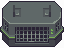
Rat Wrangler · Nuôi chuột
Chuột lớn thế nào (Growth Rate 1, cho ăn đủ)
5 luật giữ chuột sống
| Thức ăn rẻ nhất | kcal | Giá | kcal mỗi cr |
|---|---|---|---|
| Pilk | 600 | 16 | 37,5 |
| Kem vani Bei’s | 1.500 | 40 | 37,5 |
| Puice | 450 | 14 | 32 |
| Peat (chỉ qua máy cho ăn) | 800 | 25 | 32 |
| Nutrifruit tự trồng | 240 | chỉ tốn hạt | — |
Gợi ý: start nhiều tiền nhất, nhà thấp nhất, nên cùng Apprentice là lựa chọn tốt cho thành tựu mua tiệm trước ngày 50 (Prodigious).
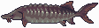
Aquafarmer · Nuôi cá
Dựng bể từng bước
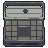
Đổ đầy bể 12.000 mL. Pure là an toàn nhất.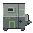
Gắn máy cho ăn, đổ thức ăn cá vào.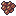
Thả trứng đã thụ tinh. Sáng sau nở thành cá con.| Cá | Ăn gì | Nước | Đẻ được | Lớn lúc | Cần nước | Cho ra |
|---|---|---|---|---|---|---|
| Tilapia | Thức ăn cá | Bẩn cũng được | Có | Ngày 8 | 750 mL | Nhiều thịt |
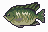 Gutter Tilapia | Thức ăn cá | Bẩn cũng được | Có | Ngày 10 | 750 mL | Ít thịt hơn, làm sạch bể |
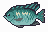 Graft Tilapia | Thức ăn cá | Phải sạch | Có | Ngày 8 | 750 mL | Miếng ghép da (đồ y tế), lời nhất |
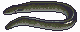 Eel | Thịt | Sạch | Không | Ngày 10 | 1.200 mL | Thịt cao cấp + da |
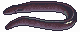 Electric Eel | Thịt | Sạch | Không | Ngày 10 | 1.200 mL | Sạc điện cho bể và pin |
| Sturgeon (cá tầm) | Thịt | High-Quality | Không | Ngày 18 | 3.000 mL | Trứng cá muối 240 cr/hũ |
Perk nên chọn: Savings + Vigilant (chỉ có 150 cr).
Mua thêm nghề giữa chừng (Joe Wild, từ ~ngày 7)
Giá ở Normal. Thin Margins đắt gấp 1,5, Red Ink gấp 2. Một phần giá trả được bằng “favor” (điểm ân tình) của Joe Wild, kiếm được khi giao dịch.
| Nghề | Giá | Cần có trước | Ghi chú |
|---|---|---|---|
| Làm rượu (Retired Winemaker) | 200 | — | Rẻ nhất, ít chỗ nhất. 750 mL nước + BloomBerry + men. 4 / 2 / 1 đêm (không men / men / siêu men). ~100 cr/chai. GloomBerry là hàng cấm, để lâu hỏng. |
| Luyện kim (Furnace) | 50 / 200 | — | Dr. Jackson ghé lần đầu bán 50. 2 sắt vụn = thỏi kém (−15%), 1+1 = thường, 2 quặng = tốt (+25%). |
| Thẩm định (Appraisal) | 85 | — | Tới ngày 8 (ngày 5 nếu bỏ tutorial). Thu nhập không cần vốn. |
| Buôn nước | 300 | — | Dễ học nhất. Thêm vòi Gutterflow 250 + Rustwater 350. |
| Trồng cây (Retired Farmer) | 350 | — | Máy cũ + hạt. Máy mới thêm 300. |
| Nuôi cá | 400 | Buôn nước | Aquaculture II 1.200 (lươn, cá tầm). |
| Thợ súng (Retired Gunsmith) | 650 | — | Cộng giấy phép 300 / 600 / 900. |
| Nuôi chuột (Ranching) | 750 | — | Chuột gen ngẫu nhiên. |
| Hoá học (Retired Chemist) | 1.000 | — | Đủ bộ lab. |
| Sửa gen cây (Plant Genetics) | 1.250 | Trồng cây | Máy quét gen + máy chỉnh DNA + 4 đĩa. |
| Buôn lậu | Smuggler’s Bay | — | Mua Smuggler’s Bay ở Dr. Jackson. |
Lời mỗi dây chuyền (1 máy, giá gốc, Normal)
Thường thì giới hạn là số khách mua, không phải số làm ra được. Chưa tính lãi bán lẻ +15% và mặc cả.
Độ khó thay đổi gì
| Price Gouge (dễ) | Mark Up (Normal) | Thin Margins (khó) | Red Ink (thử thách) | |
|---|---|---|---|---|
| Lãi bán lẻ | +20% | +15% | 0 | 0 |
| Tiền nhà tăng mỗi kỳ | +2,5% | +5% | +10% | +10% |
| Được khất nhà 1 lần | Có | Có | Không | Không |
| Giá mua tiệm (tới ngày 50) | 12.000 | 12.000 | 24.000 | 36.000 |
| Giấy phép kinh doanh | 500 | 1.500 | 2.000 | 3.000 |
| Danh tiếng: được / mất | ×1,5 / ×0,5 | ×1 / ×1 | ×0,75 / ×1,25 | ×0,5 / ×2 |
| Giá Joe Wild | ×1 | ×1 | ×1,5 | ×2 |
Ở Thin Margins và Red Ink còn mất trợ giúp cứu trợ của Joe Wild, lời nhắc, gợi ý Display Case, và để Aug lên 100% là thua.
Máy tính
1. Đồ ăn cắp bao giờ bán được (Fence)
| Bán sau | Heat | Bị khám thấy | Tính là tội |
|---|
2. Tiền nhà các tuần tới
Nguồn
- gamertw: Starting Scenarios, Money, Contraband & Heat, Hydroponics, Rat Ranching, Water, Perks, Beginner, Underground Exchange (đọc từ file game v1.0.0.12)
- probablystolenwiki: Starting Scenarios (thông báo chính thức, Rock Bottom ngày 112 của TowerNumberNine), Fish Farming
- QuestDuo: Unlock All Trades, Fish Farming
- Probably Stolen DB: Gunsmith, Aquafarming
- Whisper of the House: Custom Gun Orders, Probably Stolen Codex: Gunsmith
- Destructoid: Aquaculture